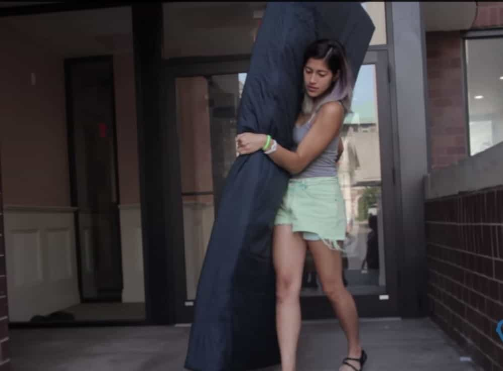

< < < Back
Woman Attempts To Shake Down Chicago Bulls Star Derrick Rose With Baseless Rape Claim – Return Of Kings
Chicago Bulls star point guard Derrick Rose is in the middle of a civil suit against him for allegedly raping a woman at her apartment in August of 2013. You can read the “complaint” here.
According to reports, Rose and two of his friends are accused of breaking into her apartment and taking turns raping her. This, according to a friend of the accuser, was after a failed attempt by Rose to drug and rape her at a party in his Beverly Hills home earlier in the night.

Rose
The accuser, who at this point is referred to as “Jane Doe,” is seeking unspecified damages due to physical and emotional trauma, as well as post traumatic stress disorder.
In a statement, Rose’s lawyer, Lisa Cohen, states that:
This is nothing more than a desperate attempt to shake down a highly respected and successful athlete.
I don’t know Derrick Rose so I can’t speak to whether or not he’s respectable, but we here in the ‘sphere know a potential false rape accusation when we see one, and this particular one is a layup. Here’s why we have strong doubts about it’s validity.
She didn’t go to the police
What do Emma Sulkowicz, Jackie Coakley, and most other public false rape accusers have in common? They didn’t go to the cops after the incident.

Wouldn’t going to the police be less strenuous?
Jane Doe claims she didn’t go to the police out of embarrassment and shame, and was concerned her conservative family would find out.
Doe claims she doesn’t remember much about the facts surrounding the events, but according to reports she definitely recalls every gruesome detail of her brutal rape:
“Jane has very little recollection of the events that followed given her incapacitated state of consciousness, with a recollection of only few second flashes at a time,” the lawsuit states. “However, Jane does recall brutal details of the rape.”
If a woman was gang raped and knew she was being gang raped, she’d file a police report.
Back in January, retired porn star Cytherea was forcibly raped multiple times by three men. She immediately went to the police, filed a report, and the three suspects were apprehended and are awaiting trial in Las Vegas.
The bottom line here is that genuine rape victims go to the cops. This woman waited two years to bravely come forward and regale the world with her harrowing experience with an NBA star and his two sex hungry friends, a story that just so happens to potentially make her a large amount of money. Which brings us to…
She stands to make a large amount of money
Is there any doubt as to why she’s doing this?
This one’s not hard to figure out after reading a detailed account by Yahoo! Sports:
“As a direct consequence of these unlawful acts, plaintiff has suffered severe physical injury, emotional distress including post-traumatic stress disorder, as well as economic, consequential, and other damages,” the suit contends.
When the 2015-2016 NBA season starts, Derrick Rose will be in year three of a five year, $95 million contract with the Chicago Bulls. He also has a $185 million shoe deal with Adidas.
So let’s unpack this, shall we?
Imagine this scenario: girl meets NBA star at a party, they exchange numbers, fuck for two years, then when she learns of his $280 million windfall from his contract and shoe deal, she decides that 24 months after they ended their consensual sexual relationship that she was gang raped by him and two of his friends. Sound plausible?
Rose’s lawyer hit the nail on the head when she called this feeble accusation a shakedown. In my opinion, the slut lost her job and decided to cash in on a two-year tryst with a professional athlete and set herself up for life.
Is this ever going to end?
Not likely. Professional athletes will always draw attention from beautiful women, so their commingling isn’t going to end any time soon.
I’ve stated before that it’s open season on professional athletes on all levels. Combine that with rape hysteria and the sports media publicizing baseless rape claims by side chicks-a-plenty, you can be sure that more are on the way.
Fellow Chicago sports star Patrick Kane is currently embroiled in his own rape ordeal
Rose’s case will hopefully be open and shut because there is no evidence of rape whatsoever. But similar to walking a suspect into the courtroom in his orange jump suit while shackled at the wrists and ankles to increase the appearance of guilt, ESPN continues to scroll every single rape or domestic violence accusation or report across that famed bottom line.
Females the world over see the fame and publicity that even a thinly-veiled money grab can get them, along with interviews for their “bravery” which ultimately lead to their end game…money.
Conclusion
Based on the shaky facts of the case it appears that, aside from a few weeks of bad publicity, Rose will likely come out of this ordeal unscathed. The Bulls haven’t taken the Baltimore Ravens approach by tearing up his contract (the collective bargaining agreement in the NFL allows this for any reason) and Adidas has voiced their support for Rose stating that their partnership with him is unwavering.
Derrick seems confident as well:
“I am just focusing on staying healthy and getting ready for the season,” Rose said in the statement. “I am not going to comment other than to say — I know the truth, and am confident I will be proven innocent.”
At the end of the day, this appears to be another false rape claim by a woman looking to finance her useless life by exploiting a professional athlete.
Read Next: Why American Has Become Infected With Rape Hysteria